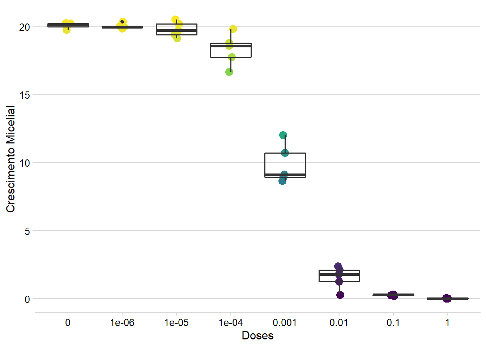
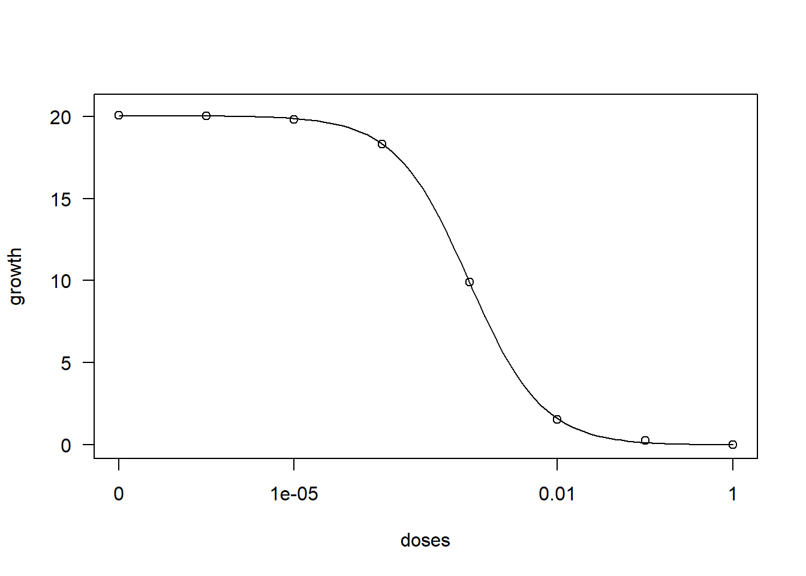
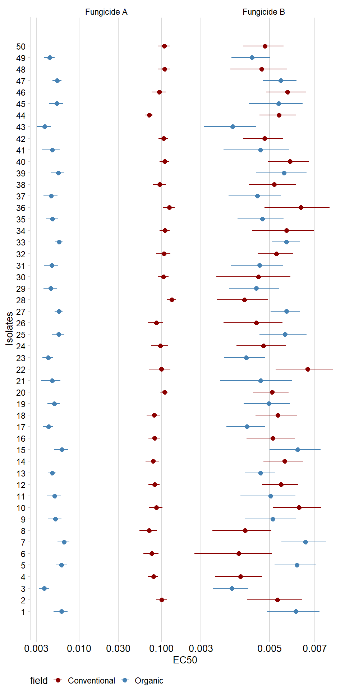
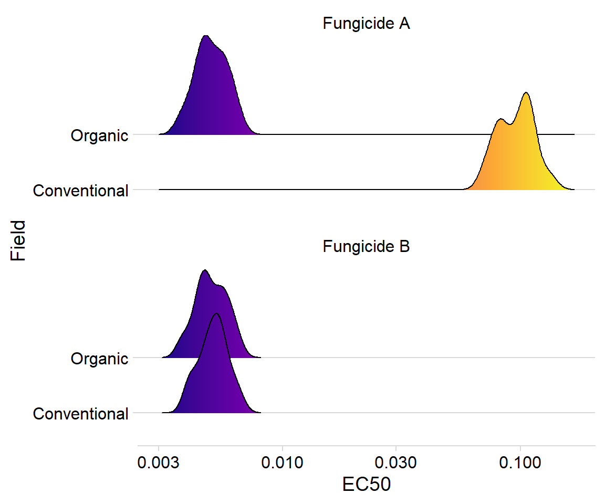

library(tidyverse)
library(drc)
library(cowplot)
library(ggridges)Sensibilidade de fungos à fungicida no R
PT-BR
plant pathology
code
analysis
Como estimar \(EC_{50}\) no R
Olá pessoal!
Nesse post eu vou mostrar como estimar a \(EC_{50}\) de fungicidas utilizando o R. Para aqueles que não sabem, a \(EC_{50}\) é a concentração na qual um composto inibe 50% do crescimento de um organismo quando comparado com a testemunha (não tratado).
Na Fitopatologia, a \(EC_{50}\) é muito utilizada para avaliar a sensibilidade de fungos a fungicidas. O aumento na \(EC_{50}\) de alguns isolados pode indicar a seleção para populações menos sensíveis.
Carregar os pacotes
Segue abaixo os pacotes que vamos utilizar. O pacote utilizado para estimar a \(EC_{50}\) é o drc. Caso você não tenha ele instalado, basta você ir no seu Console, colar install.packages("drc") e apertar enter que ele será instalado. Caso não tenha os outros pacotes, faça o mesmo para eles, apenas troque o nome dentro do parênteses.
Após ter instalado todos esses pacotes, basta carrega-los da seguinte forma:
Dados
Primeiramente, precisamos criar um banco de dados para podermos estimar a \(EC_{50}\) a partir deles. Para isso, vou utilizar um modelo base para o comportamento de resposta a doses de fungicidas (Noel et al. 2018). Caso você já possua um banco de dados, basta carregar utilizando a função para tal (Veja o post sobre como carregar dados no R).
\[ f(x) = c +\frac{d-c}{1+exp(b(log(x)-log(e)))}\]
Esse modelo é denominado de Log-logístico de quatro parâmetros LL.4(). Ele possui 4 parâmetros que são b, c, d, e. O parâmetro b é slope da curva no seu ponto de inflexão, c é a assíntota inferior da curva, d é o limite superior da curva, e e é a \(EC_{50}\). A variável x no modelo significa a dose ou concentração do fungicida. Sendo assim, para cada valor de dose, é possível calcular um valor de crescimento micelial, por exemplo.
Portanto, usando esse modelo e criei uma função para poder gerar valores de crescimento micelial.
grow = function(dose, b,c,d,e){
x = dose
y = c + (d-c)/(1+exp(b*(log(x)-log(e))))
erro = (y * 0.02 * ( (d + 0.05 * d) - y ))
growth = rnorm(length(x),y, erro)
return(growth)
}Abaixo eu mostro um exemplo da utilização dessa função. Eu crio um vetor de doses no qual eu denominei de doses. Insiro o vetor da função que criei acima junto com alguns valores que atribui arbitrariamente para os parâmetros.
#criar vetor de dose
doses = rep(c(0, 1e-6,1e-5, 1e-4, 1e-3, 1e-2, 1e-1, 1),5)
set.seed(1) # Isso aqui faz que os valores simulados sejam sempre os mesmos.
#simular crescimento micelial
growth = grow(doses, b = 1, c = 0, d = 20, e = 0.001)
df1 = data.frame(doses,growth)
head(df1) doses growth
1 0e+00 19.749418
2 1e-06 20.054870
3 1e-05 19.405505
4 1e-04 19.816651
5 1e-03 10.724917
6 1e-02 1.245888Depois disso eu gero um gráfico com os valores simulados.
df1 %>%
ggplot()+
geom_jitter(aes(factor(doses),growth, color = growth),
width = 0.05,
size = 3.5,
# color= "steelblue",
alpha = 1)+
geom_boxplot(aes(factor(doses),growth), fill = NA, size = .7)+
scale_color_viridis_c(option = "D",direction = 1)+
labs(x ="Doses", y = "Crescimento Micelial")+
theme_minimal_hgrid(font_size = 12)+
theme(legend.position = "none")
Estimando a \(EC_{50}\) para um isolado
Para estimar a \(EC_{50}\), antes devemos selecionar o modelo que melhor se ajusta aos dados. Para isso vamos usar a função drm() do pacote drc. Nessa função precisamos fornecer a formula, que é uma descrição simbólica da equação, que basicamente vai indicar qual é sua coluna com os valores de doses e qual é a coluna que contem os valores de crescimento micelial. No nosso caso a formula será growth~dose. Também precisamos indicar qual é o data.frame no argumento data, no nosso caso data = df1. O argumento fct é onde você indica qual modelo será utilizado. No nosso caso, vamos utilizar o LL.4(). Para saber quais modelos estão disponíveis use a função getMeanFunctions().
veja a implementação do modelo. Aqui usamos a função summary para ver as estimativas dos parâmetros e suas estatísticas.
model1 = drm(formula = growth~doses, data = df1, fct = LL.4())
summary(model1)
Model fitted: Log-logistic (ED50 as parameter) (4 parms)
Parameter estimates:
Estimate Std. Error t-value p-value
b:(Intercept) 1.0447e+00 7.9231e-02 13.1857 2.415e-15 ***
c:(Intercept) -1.7187e-02 2.3108e-01 -0.0744 0.9411
d:(Intercept) 2.0030e+01 1.8943e-01 105.7401 < 2.2e-16 ***
e:(Intercept) 9.7556e-04 6.5352e-05 14.9277 < 2.2e-16 ***
---
Signif. codes: 0 '***' 0.001 '**' 0.01 '*' 0.05 '.' 0.1 ' ' 1
Residual standard error:
0.7130597 (36 degrees of freedom)Veja o gráfico do ajuste
plot(model1)
Para obter o valor de \(EC_{50}\) vamos usar a função ED. Nela você precisa indicar o modelo ajustado model1. No argumento respLev é onde você indica qual o valor de EC que quer estimar. Como queremos 50% (EC50), respLev=50. Além disso, no argumento interval você também pode indicar se deseja estimar os intervalos de confiança da estimativa media de \(EC_{50}\). PAra isso, basta indicar qual tipo de intervalo você deseja Para o modelo LL.4() usando interval= "delta".(Nota: Para mais informações sobre intervalos de confiança use ?ED).
ED(model1, respLev=50, interval = "delta")
Estimated effective doses
Estimate Std. Error Lower Upper
e:1:50 9.7556e-04 6.5352e-05 8.4302e-04 1.1081e-03Estimando a \(EC_{50}\) para MAIS DE UM isolado
Ótimo, conseguimos estimar a \(EC_{50}\) para um isolado. No entanto, muitas vezes vamos precisar estimar para vários isolados. Sendo assim, agora vamos ver como a gente faz para estimar a \(EC_{50}\) para uma situação onde temos 100 isolados.
Para isso, vou criar um cenário no qual eu tenho 50 isolados de um fungo hipotético em que metade deles foram coletados em uma lavoura orgânica e a outra metade em uma lavoura convencional. Esses isolados foram submetidos a dois fungicidas diferentes, os quais denominei de Fungicida A e Fungicida B.
Agora vamos criar um dada.frame para um fungicida A e um para o fungicida B.
Fungicida A
Para o fungicida A eu considerei que os isolados do cultivo convencional seriam menos sensíveis a ele.
set.seed(1)
n_isolates = 25
nrep = 5
n_dose =7
n_field = 2
n = n_isolates*nrep*n_dose*n_field
field = c(rep("Organic",nrep*n_dose), rep("Conventional",nrep*n_dose))
isolate = sort(rep(1:((n_isolates*2)),nrep*n_dose))
doses = (rep(c(0,1e-5, 1e-4, 1e-3, 1e-2, 1e-1, 1),nrep*n_field))
EC50 = c(5e-3, 1e-1)# diferentes valores de Ec50
fungicida_A = data.frame(isolate,
field = rep(field,n_isolates),
fungicida = "Fungicide A",
dose = rep(doses,n_isolates)) %>%
mutate(efeito = case_when(
field == "Conventional" ~ rnorm(n,EC50[2],0.0001),
field == "Organic" ~ rnorm(n,EC50[1],0.0001))) %>%
mutate(growth = grow(dose, b = 1, c = 0, d = 20, e = efeito))%>%
dplyr::select(-efeito)
head(fungicida_A) isolate field fungicida dose growth
1 1 Organic Fungicide A 0e+00 20.2082399
2 1 Organic Fungicide A 1e-05 20.1168279
3 1 Organic Fungicide A 1e-04 19.2479678
4 1 Organic Fungicide A 1e-03 15.8123455
5 1 Organic Fungicide A 1e-02 7.3206757
6 1 Organic Fungicide A 1e-01 0.6985264Fungicida B
Já Para o fungicida B eu considerei que os isolados teriam o mesmo padrão de sensibilidade, ou seja, não existe diferença entre as \(EC_{50}\).
set.seed(1)
n_isolates = 25
nrep = 5
n_dose =7
n_field = 2
n = n_isolates*nrep*n_dose*n_field
field = c(rep("Organic",nrep*n_dose), rep("Conventional",nrep*n_dose))
isolate = sort(rep(1:((n_isolates*2)),nrep*n_dose))
doses = (rep(c(0,1e-5, 1e-4, 1e-3, 1e-2, 1e-1, 1),nrep*n_field))
EC50 = c(5e-3, 5e-3) # Mesma Ec50
fungicida_B = data.frame(isolate,
field = rep(field,n_isolates),
fungicida = "Fungicide B",
dose = rep(doses,n_isolates)) %>%
mutate(efeito = case_when(
field == "Conventional" ~ rnorm(n,EC50[2],0.0001),
field == "Organic" ~ rnorm(n,EC50[1],0.0001))) %>%
mutate(growth = grow(dose, b = 1, c = 0, d = 20, e = efeito)) %>%
dplyr::select(-efeito)
head(fungicida_B) isolate field fungicida dose growth
1 1 Organic Fungicide B 0e+00 20.2082399
2 1 Organic Fungicide B 1e-05 20.1168279
3 1 Organic Fungicide B 1e-04 19.2479678
4 1 Organic Fungicide B 1e-03 15.8123455
5 1 Organic Fungicide B 1e-02 7.3206757
6 1 Organic Fungicide B 1e-01 0.6985264Aqui eu uso a função bind_rows para juntar os dois data.frames criados acima e crio um novo data.frame chamado apenas de fungicida.
fungicida = fungicida_A %>%
bind_rows(fungicida_B)
head(fungicida) isolate field fungicida dose growth
1 1 Organic Fungicide A 0e+00 20.2082399
2 1 Organic Fungicide A 1e-05 20.1168279
3 1 Organic Fungicide A 1e-04 19.2479678
4 1 Organic Fungicide A 1e-03 15.8123455
5 1 Organic Fungicide A 1e-02 7.3206757
6 1 Organic Fungicide A 1e-01 0.6985264Existe uma forma em que você pode indicar na função drm() que você tem mais de um isolado no seu banco de dados. O código ficaria algo como abaixo. No entanto, se você tem muitos isolados a função pode demorar muito para rodar (se rodar). Além disso, o output da função não é muito fácil de lidar caso você não tenha muita experiência em lidar com matrizes no R.
# NÂO RODE ISSO
model = drm(growth~dose, curveid = isolate, fct = LL.4(), data = fungicida)
ED(model, 50, interval = "delta")Sendo assim, eu criei um pacote para facilitar nossa vida.
O nome do pacote é ec50estimator. Para instalar esse pacote você vai precisar usar a função install.packages():
install.packages("ec50estimator")A versão de desenvolvimento pode ser instalada usando o seguinte código:
if (!require(devtools)) {
install.packages("devtools")
}
devtools::install_github("AlvesKS/ec50estimator")'Veja mais informaçãoes sobre o pacote aqui
O processo de instalação pode sugerir a atualização/instalação de alguns pacote, portanto recomendo que faça a instalação desses outros pacotes.
Assim que instalar o pacote. O próximo passo é carrega-lo no seu script.
library(ec50estimator)A função estimate_EC50() é usada para calcular as EC50 para cada isolado dentro de cada sistema de cultivo e para cada fungicida. Assim como na função drm(), na estimate_EC50() você também precisa fornecer a formula. Forneça também no argumento data o data.frame onde estão seus dados. Indique a coluna que identifica cada isolado no argumento isolate_col. Se seus dados são estratificados (por região, sistema de cultivo ou ano, por exemplo) indique as colunas no argumento strata_col. Indique o modelo será utilizado no argumento fct (mesmos do pacote drc). Se você quer que os intervalos de confiança sejam estimados, indique no argumento interval (funciona da mesma forma que a função drm()).
df_ec50 = estimate_EC50(growth~dose,
data =fungicida,
isolate_col = "isolate",
strata_col = c("field","fungicida"),
interval = "delta",
fct = LL.3())
head(df_ec50) ID field fungicida Estimate Std..Error Lower Upper
1 1 Organic Fungicide A 0.006072082 0.0005740341 0.004902813 0.007241351
2 3 Organic Fungicide A 0.003776957 0.0002432571 0.003281459 0.004272456
3 5 Organic Fungicide A 0.006122508 0.0004575060 0.005190599 0.007054418
4 7 Organic Fungicide A 0.006532201 0.0005278730 0.005456959 0.007607443
5 9 Organic Fungicide A 0.005115267 0.0004672111 0.004163589 0.006066945
6 11 Organic Fungicide A 0.005044116 0.0005000569 0.004025533 0.006062698
Warning
ATENÇÃO: Neste post, eu usei o mesmo modelo (LL.4()) para os dois fungicidas (A e B). No entanto, é importante verificar qual modelo é mais apropriado para seus dados. Para isso, antes de rodar a função estimate_EC50() para todos seus dados, use a função drm() para ajustar um modelo para alguns isolados e posteriormente utilize a função mselect() para calcular as estatísticas que vão te auxiliar a selecionar o melhor modelo. Dica: quanto menor o valor de AIC, melhor o modelo. Mais informações rode o comando ?mselect no seu Console.
Gráficos
Veja as estimativas de EC50 e intervalos de confiança para todos os isolados.
df_ec50 %>%
ggplot(aes(as.numeric(ID),Estimate, color = field))+
geom_point(size = 2)+
geom_errorbar(aes(ymin=Lower,ymax = Upper), width=0)+
facet_wrap(~fungicida, scales = "free_x",nrow = 1)+
scale_y_log10()+
scale_x_continuous(breaks = 1:50)+
scale_color_manual(values = c("darkred", "steelblue"))+
labs(x = "Isolates", y = "EC50")+
theme_minimal_vgrid(font_size = 10)+
coord_flip()+
theme(axis.text.x = element_text(size=10),
legend.position = "bottom")
Use o pacote ggridges para criar gráficos de densidade.
df_ec50 %>%
ggplot(aes(Estimate, field, fill = stat(x)))+
geom_density_ridges_gradient(alpha = 0.3)+
scale_x_log10()+
scale_fill_viridis_c(option = "C")+
facet_wrap(~fungicida, nrow = 2)+
theme_minimal_hgrid()+
labs(x = "EC50", y = "Field")+
theme(legend.position = "none")Picking joint bandwidth of 0.0328Picking joint bandwidth of 0.0285
References
Noel, Z. A., Wang, J., and Chilvers, M. I. 2018. Significant Influence of EC 50 Estimation by Model Choice and EC 50 Type. Plant Disease. 102:708–714.